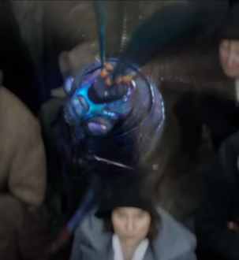

뒤로 가기

광택 나는 푸른 빛깔의 곤충, 벌과 비슷하게 생겼다.
길이는 1.3cm가량이며 선명한 파란 빛의 몸을 가지고 있다. 색 때문에 눈에 띄기 쉬울 것 같지만 너무나 빠른 속도로 움직이기 때문에 마법사들조차 침에 쏘이기 전에는 알아차리지 못하는 일이 많다고 한다.
꽁지에 있는 침에 쏘인 사람은 아찔한 현기증을 느끼면서 잠시 몸이 공중에 뜨며, 이 부작용을 즐기기 위해 원산지인 오스트레일리아의 젊은 마법사들은 고의로 빌리위그의 침에 찔리려고 애를 쓰기도 한다.
너무 여러 번 찔리게 되면 그 부작용으로 둥둥 떠다니는 효과가 며칠 동안이나 지속되기도 하며, 간혹 빌리위그의 침에 심한 알러지 반응을 보여 이 몸이 둥둥 뜨는 상태가 영구적으로 지속되는 경우도 있다고 한다.
침은 약재나 마법사 세계의 과자인 피징 위즈비의 원료로 사용된다. 때문에 피징 위즈비를 섭취하면 몸이 잠시동안 동동 떠다니게 된다.
거리에서 붕붕거리며 날아다녀 뉴트에게 본인의 가방이 열렸음과 그 현장이 근처라는 단서를 제공해 주었다.